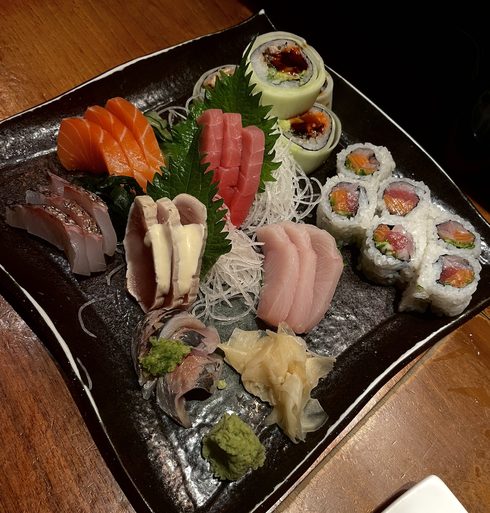
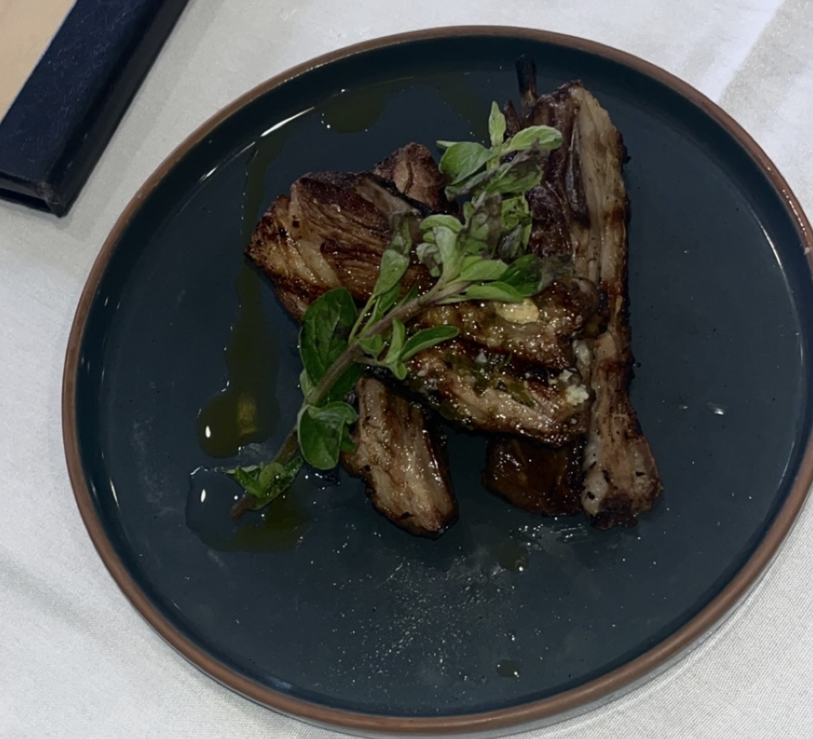
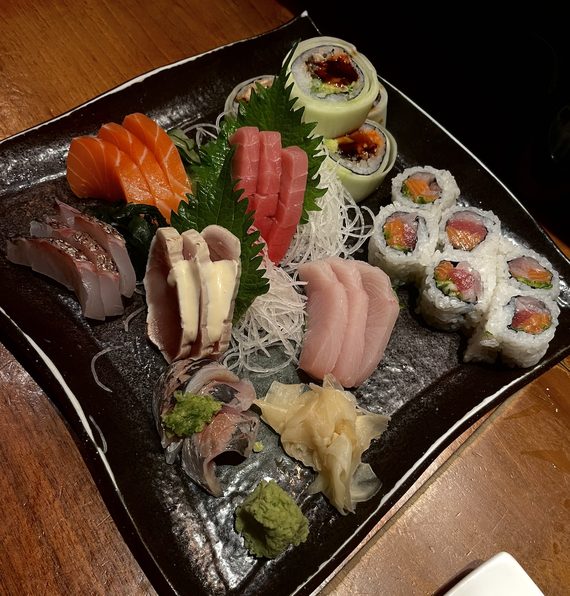
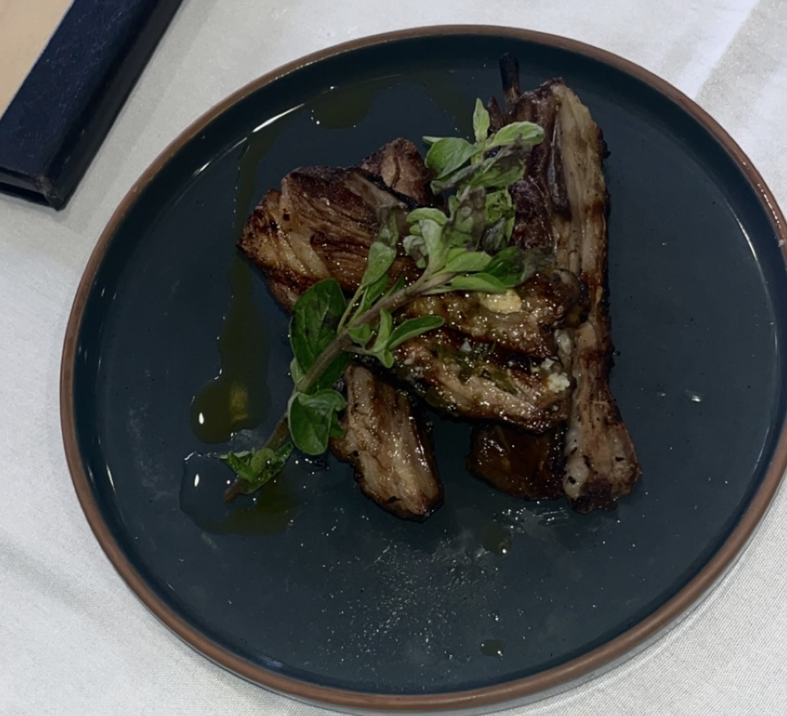

Food Diary!
As I briefly mentioned above, I am a really big foodie! I like trying out different restaurants around me and taking food pics. As such, I decided to use my website as a food journal. Feel free to visit my food library page if you are interested! 


